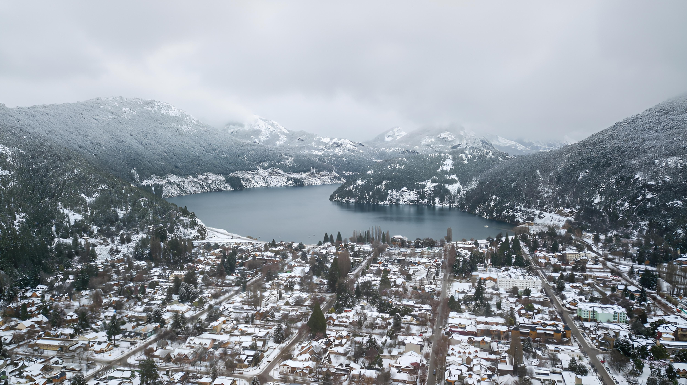

San Martín de los Andes: Patagonia de ensueño
Ubicada en Neuquén, San Martín de los Andes es una joya de la Patagonia, rodeada de montañas, lagos y bosques. Su belleza natural atrae a quienes buscan tranquilidad, aventura y paisajes de ensueño.
El Lago Lácar es uno de los principales atractivos, ideal para paseos en bote, kayak y pesca. Los senderos de los alrededores permiten realizar trekking, ciclismo y caminatas entre bosques nativos, con vistas espectaculares de la Cordillera de los Andes.
En invierno, el cercano Cerro Chapelco se convierte en un destino ideal para esquí y snowboard, mientras que en verano se puede disfrutar de actividades al aire libre y excursiones a parques y reservas naturales cercanas.
La ciudad ofrece también una amplia oferta gastronómica y alojamientos de todos los estilos, desde hostels hasta hoteles boutique, perfectos para disfrutar de la Patagonia con comodidad.
San Martín de los Andes combina aventura, naturaleza y descanso, haciendo que cada visita sea inolvidable. Sin dudas, un destino que invita a volver una y otra vez.
← Volver a Categorías